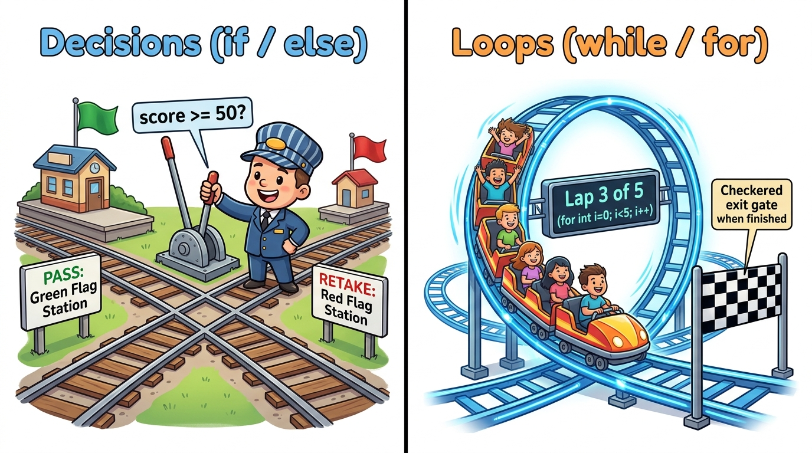

Bridge 3 — Decisions & Loops
Without decisions, a program is just a rigid calculator that runs from top to bottom and halts. Real applications are intelligent: they validate user passwords, process thousands of database records, and retry failed network requests. Today you learn to direct the flow of your program with boolean logic, if-else branching, modern switch expressions, and loops.
- Construct complex conditional tests using relational (
==,!=,<,>=) and logical operators (&&,||,!). - Explain how short-circuit evaluation prevents null pointer and divide-by-zero crashes.
- Implement multi-branch decisions using
if,else if,else, and modern Java 14+switchexpressions. - Choose the appropriate loop construct (
for,while,do-while) based on whether iteration count is known in advance. - Control loop flow precisely with
breakandcontinuestatements. - Build an interactive console game with user input, score tracking, and replay loops.
Your Learning Roadmap
1. What is Control Flow?
By default, a computer program executes sequentially: line 1, then line 2, then line 3. Control Flow is the ability to change that straight line:
- Branching (Decisions): Choose track A or track B depending on whether a condition is true (e.g. "Is the user an admin?").
- Looping (Repetition): Repeat a block of code multiple times until a stopping condition is met (e.g. "Process all 50 items in the cart").
2. The Railroad Switch & Loop Analogy
Think of your running program as a train traveling forward on a railroad track.

if/else).
A green light sends the train down the VIP express route; a red light diverts it to standard security check.
When the train hits a loop (for/while), it circles the loop track repeatedly until its cargo counter reaches zero,
at which point the switch flips and lets the train continue down the main line!
3. Boolean Logic & Short-Circuit Evaluation
Every decision in Java evaluates to a boolean: either true or false.
A. Relational Comparison Operators
| Operator | Meaning | Example | Evaluates To |
|---|---|---|---|
== | Equal to | 5 == 5 | true |
!= | Not equal to | 5 != 3 | true |
>, < | Greater than, Less than | 10 > 20 | false |
>=, <= | Greater than or equal, Less than or equal | 18 >= 18 | true |
B. Logical Operators (AND, OR, NOT)
| Operator | Name | Rule | Example |
|---|---|---|---|
&& | AND | True ONLY if both sides are true | age >= 18 && hasId |
|| | OR | True if at least one side is true | isMember || hasCoupon |
! | NOT | Reverses truth: flips true to false and vice-versa | !isBlocked |
&& and || from left to right and stops the instant the final answer is certain:
- In
false && anything, Java never evaluates the right side because the result must befalse. - In
true || anything, Java never evaluates the right side because the result must betrue.
if (text != null && text.length() > 0) will never throw a NullPointerException because if text is null, Java immediately stops checking!
4. Branching with If, Else If, and Else
Here is how you write decisions in Java:
public class GradeDecider {
public static void main(String[] args) {
int score = 84;
if (score >= 90) {
System.out.println("Grade: A - Outstanding!");
} else if (score >= 80) {
System.out.println("Grade: B - Excellent work.");
} else if (score >= 70) {
System.out.println("Grade: C - Satisfactory.");
} else {
System.out.println("Grade: F - Needs review.");
}
}
}5. Modern Switch Expressions (Java 14+)
When matching a single variable against many fixed values (like days of the week, HTTP status codes, or menu options),
a switch is cleaner than 10 messy if-else blocks.
Modern Java uses the elegant arrow syntax (->) which eliminates the notorious missing break bug:
int dayOfWeek = 6; // 1 = Mon, 6 = Sat, 7 = Sun
switch (dayOfWeek) {
case 1, 2, 3, 4, 5 -> System.out.println("Weekday: Time to study Java!");
case 6 -> System.out.println("Saturday: Build a JavaFX side project!");
case 7 -> System.out.println("Sunday: Rest and recharge.");
default -> System.out.println("Invalid day entered!");
}6. Repeating Code with Loops
Java gives you 3 primary loop constructs:
A. The for Loop (When you know how many times to repeat)
// Syntax: for (initialize; condition; update)
for (int i = 1; i <= 5; i++) {
System.out.println("Rocket launch in: " + i);
}
System.out.println("Liftoff!");B. The while Loop (When repeating until an event happens)
The condition is checked before entering the loop body. If the condition is false initially, it runs zero times:
int batteryPercent = 100;
while (batteryPercent > 20) {
System.out.println("Gaming smoothly... battery at " + batteryPercent + "%");
batteryPercent -= 30; // Drain battery
}
System.out.println("Low battery warning! Plug in charger.");C. The do-while Loop (Guaranteed to run at least ONCE)
The condition is checked after executing the body. Ideal for menu prompts and user input validation:
int pinAttempt = 0;
do {
System.out.println("Prompting user to enter PIN code...");
pinAttempt++;
} while (pinAttempt < 1); // Executes once even though condition becomes false immediately!7. Steering Loops: Break & Continue
break: Smashes the emergency glass — immediately terminates the loop and jumps completely outside.continue: Skips the rest of the current iteration and jumps straight to the next cycle.
for (int i = 1; i <= 10; i++) {
if (i == 4) {
System.out.println("Skipping unlucky number 4!");
continue; // Skips printing 4, continues to 5
}
if (i == 8) {
System.out.println("Stopping early at 8!");
break; // Terminates loop completely!
}
System.out.print(i + " ");
}💻 Interactive Simulator: Railroad Flow Controller
Adjust the inputs below to see how Java evaluates the condition and routes code execution:
⚠️ Top 3 Beginner Flow Traps
if or for
if (score >= 90); // DANGEROUS SEMICOLON!
{
System.out.println("You passed!"); // This block ALWAYS runs, even if score is 10!
}The Fix: Never place a semicolon after the parentheses of an if, for, or while statement. The semicolon creates an empty statement that finishes the check immediately.
==
String input = "yes";
if (input == "yes") { ... } // WARNING: Compares memory addresses, NOT letters!The Fix: For objects and strings, always use .equals(): if (input.equals("yes")).
📝 Knowledge Check
for (int i = 0; i < 5; i++) { ... }i starts at 0 and increments through 0, 1, 2, 3, 4. When i reaches 5, the condition 5 < 5 becomes false, completing exactly 5 iterations.
if (false && secretMethod())?&&) and the left operand is false, the overall outcome is already guaranteed to be false. Java skips the right side entirely.
do-while loop evaluates its condition at the bottom after executing the loop body.
continue statement do when encountered inside a loop?continue bypasses the remaining lines in the current iteration and begins the next iteration. In contrast, break terminates the entire loop.
🛠 Guided Lab: High-Low Guessing Game
NumberGuessGame with a main method.
int secret = (int)(Math.random() * 100) + 1;.
java.util.Scanner and create an input reader: Scanner scanner = new Scanner(System.in);.
while loop to give the player up to 7 attempts. Inside the loop, read their guess with scanner.nextInt() and tell them "Too High!", "Too Low!", or "CORRECT!".
break if they guess correctly. If they run out of attempts, reveal the secret number!
📺 Recommended Further Study
Clear visual breakdown of if statements, comparison operators, and loops in modern Java.
▶ Watch on YouTubePractical hands-on exercises comparing loop structures and debugging infinite loops.
▶ Watch on YouTubemain method
becomes messy fast. In Bridge 4, you'll learn how to package reusable logic into Methods
and store collections of data in Arrays.